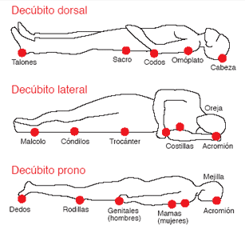

Índice de contenidos
- 1. Masajes
- 1.1. Efectos del masaje
- 2. Posiciones de relajación
- 2.1. Decúbito ventral/prono
- 2.2. Decúbito dorsal/supino
- 2.3. Decúbito lateral
- 3. Técnicas y efectos del masaje
- 3.1. Rozamiento o effleurage
- 3.2. Friccion
- 3.3. Maniobras intermedias
- 3.4. Petrissage o amasamiento
- 3.5. Percusión
- 4. Material adicional
MASAJES
Es la aplicación de movimientos en forma de contactos, presiones y vibraciones sobre las partes blandas sin provocar desplazamientos corporales, con fines preventivos o terapéuticos.
EFECTOS DEL MASAJE
La aplicación del masaje tiene efecto sobre la estructura del cuerpo y sobre las distintas funciones corporales.
Sobre la piel
- Elimina el detritus y las células muertas (descamados).
- Activa la circulación superficial.
- Produce el aumento de la temperatura local.
- Mejora la nutrición celular.
- Aumenta la multiplicación celular (prod. Celular joven).
- Estimula la actividad linfática.
- Actúa sobre las terminaciones nerviosas: relajando-sedando.
- Permite la absorción de medicamentos por sus características de porosidad.
- La cosmética moderna utiliza por ello sustancias para evitar la caída del cabello, el envejecimiento prematuro de la piel, la celulitis, las estrías, etc.
Sobre tejidos grasos
A través del aumento de la circulación aumenta también directamente el metabolismo de las grasas y se produce el aumento de la reabsorción de los tejidos y desechos intersticiales que son eliminados a través del sistema linfático. Esto se traduce en una reducción de peso y medidas. Sin embargo deberá ir acompañado de dieta y tratamiento médico adecuado para que el efecto sea mayor.
Sobre los músculos
Aumenta la circulación, el metabolismo, el aporte nutritivo.
Mejora la relación agonista-antagonista dando flexibilidad al músculo y tono apropiado (corrigen posturas, se elongan músculos retraídos porque corrige la tensión muscular).
Estimula la contracción logrando firmeza.
POSICIONES DE RELAJACIÓN
Tienen como función acortar los puntos de inserción muscular para lograr así la relajación del paciente.
DECÚBITO VENTRAL/PRONO
Una almohada se coloca en abdomen en caso de que el paciente presente una híper lordosis, pero sin dificultar su respiración a nivel costo abdominal inferior. Si trabajamos la región Dorso Lumbar los brazos van a ir a los costados del paciente y la cabeza rotada. Si la camilla es angosta los brazos pueden ir colgando a ambos lados de la camilla. Si trabajamos gemelos se colocan bolsitas bajo tobillos.
DECÚBITO DORSAL/SUPINO
Se coloca una bolsita debajo de los huecos poplíteos con una flexión de 4° a 15° para cortar los puntos de inserción y para disminuir la híper lordosis debido a que flexionando rodillas se flexiona también caderas y se relaja la columna lumbar. En cuanto a los MMSS. Los colocamos semi- flexionados a los lados del cuerpo.
DECÚBITO LATERAL
El miembro inferior del paciente que se encuentra en el plano de apoyo se encuentra en extensión de rodillas, el otro miembro inferior que se encuentra en el plano superior, se encuentra en el plano con flexión de rodilla y cadera. (Puede colocarse una bolsita debajo de la rodilla). El MS que está sobre el plano de apoyo se va a encontrar sobre el costado del paciente o cayendo hacia delante.
TÉCNICAS Y EFECTOS DEL MASAJE
ROZAMIENTO O EFFLEURAGE
Es como una caricia con un leve contacto de la mano y sin provocar deslizamiento de los tejidos. Suave y lento se realiza al comienzo del tratamiento para ambientar al cliente.
- Efectos:
- No actúa sobre vasos por ser superficial.
- Actúa sobre las terminaciones nerviosas.
- Seda (lento).
- Estimula (rápido).
- Modos:
- Superficial
- Profundo
FRICCIÓN
Roce suave provocando presión y desplazamiento de la piel sobre los tejidos subyacentes.
- Formas comunes:
- Digital con la yema de los 4 dedos.
- Digital con la yema del pulgar.
- Dedos superpuestos.
- Talón de la mano.
- A mano llena.
- Nudillos.
- Puño fricción.
- Direcciones:
- Rectilineo.
- Circular.
- Helicoidal.
MANIOBRAS INTERMEDIAS
Circular
Se toma el miembro ahorquillando. Se hacen 3 o 4 maniobras circulares y se desliza en sentido centrípeto hasta la raíz del miembro.
Plissage o pinzado rodado
Oponiendo pulgares al resto de los dedos, se forma un pliegue y avanzo.

PETRISSAGE O AMASAMIENTO
Consiste en poner las dos manos abiertas a poca distancia una de la otra con los dos pulgares abiertos de un lado y el resto de los dedos del otro formando un rombo. Se presiona la zona y se mueve las manos en formas opuestas, sin ahuecarlas
- Pinzamiento: se toma entre pulgar y los 4 últimos Dedos
- Pellizcamiento o grasping: se toma entre pulgar e índice o pulgar, indice y medio.
- Mano llena: no queda espacio entre la mano y el tejido.
- Digital: se realiza opiniendo los dedos.
PERCUSIÓN
- Borde cubital o hachure: en forma conjunta o alternada se separan los dedos y se golpea suavemente.
- Cacheteo o mano llena: con los dedos o con toda la palma de la mano del lado palmar o dorsal.
- Pianement: con la yema de los 4 ultimos dedos en forma alternada como si tocáramos el piano.
- Puño percusión: con la cara dorsal de las primeras falanges de los dedos se golpea de forma suave y alternada.
- Efectos:
- Mejora el tono muscular: favorece la contracción muscular
- Primero produce una vaso-constricción y después una vaso-dilatación.
CONTRAINDICACIONES DEL MASAJE
- Heridas abiertas.
- Cicatrices recientes.
- Emfermedades eruptivas de la piel.
- Inflamaciones.
- Hematomas.
- Quemaduras.
- Cáncer.
- 40 días post-parto.
© Todos los derechos reservados.